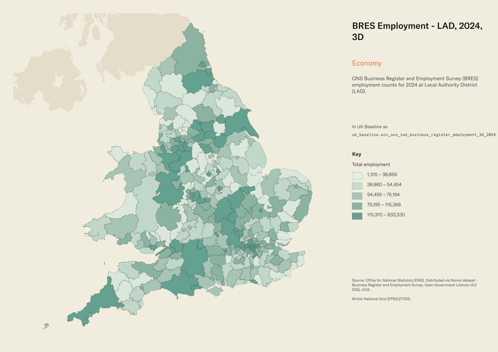
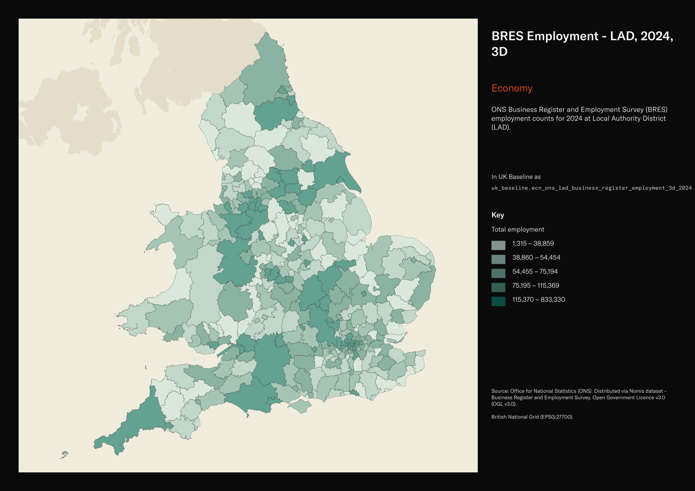

ONS Business Register and Employment Survey (BRES) employment counts for 2024 at Local Authority District (LAD)¶
BRES Employment - LAD, 2024, 3D
ecn_ons_lad_business_register_employment_3d_2024


SOURCE
- Office for National Statistics (ONS). Distributed via Nomis dataset - Business Register and Employment Survey.
DOCUMENTATION
- Nomis dataset page : https://www.nomisweb.co.uk/datasets/newbres6pub
- ONS BRES methodology : https://www.ons.gov.uk/employmentandlabourmarket/peopleinwork/employmentandemployeetypes/methodologies/businessregisterandemploymentsurveybres
- ONS BRES QMI : https://www.ons.gov.uk/employmentandlabourmarket/peopleinwork/employmentandemployeetypes/methodologies/businessregisteremploymentsurveybresqmi
DEFINITIONS
- Employees: people aged 16 or over paid directly through the employer's payroll (full-time, part-time or on a training scheme) on the survey reference date. (ONS BRES QMI)
- Working owners: business owners (sole traders, sole proprietors and partners) who take a share of the profits rather than being paid a wage through the payroll. (ONS BRES QMI)
- Employment is the sum of Employees plus Working owners (ONS BRES QMI).
- Employment is broken down by 3-digit SIC2007 industry group.
SCOPE
- England and Wales. Local Authority District as of April 2021; 331 rows (309 England + 22 Wales) after post-load Scotland filter. Reference date 1 January 2024.
CRS
- EPSG:27700 (OSGB 1936 / British National Grid).
LICENCE
- Open Government Licence v3.0 (OGL v3.0).
DATA QUALITY CAVEATS
- County and Spatial Development Strategy columns are England and Wales only; rows elsewhere carry no county or SDS. Wales and the Isles of Scilly carry a county but no SDS. Rows with no Local Authority District code are NULL in all four columns.
- NULL means the cell was suppressed by ONS for disclosure control; 0 means genuinely zero employment. Suppression bites harder at fine geographies (LSOA) and small industries, so expect many NULLs across the industry row.
- Reading values: a NULL in an industry column does NOT mean the area has no employment in that industry. It means ONS withheld the value because fewer than ~3 businesses operate there in that division/group. Sum across industries with caution.
- LAD edition: BRES ships LAD codes as of April 2021 (
lad21cd). The geometry is joined from uk_baseline.adm_ons_lad_boundary_may2022 which carrieslad22cd; values match 1:1 for the 331 E&W LADs after Scotland is removed.
ENRICHMENT
sds_name/sds_group— Spatial Development Strategy area and devolution status, a Prior + Partners categorisation over Ministry of Housing, Communities and Local Government (MHCLG) English devolution policy, joined at load on the row's Local Authority District 2025 code via uk.ref_lad25_ctyua25_sds_lu_jul2026.
NOT IN THIS DATASET
- The narrower Employees-only measure (payroll only, excluding working owners).
- Full-time and part-time breakdowns of Employees.
- Industry percentage form.
- Scotland LADs (S12*): BRES open-access publishes no data for Scotland at LAD level (all cells were zero). 32 Scotland LADs were removed post-load.
LOADED INTO uk_baseline
- Loaded by PNC, 27 May 2026.
Columns¶
| Column | Type | Description / unit |
|---|---|---|
fid |
integer |
|
lad21cd |
character varying(20) |
Source field GEOGRAPHY_CODE. |
lad21nm |
character varying(255) |
Source field GEOGRAPHY_NAME. |
sic011_ |
integer |
Unit: "Persons". SIC2007 3-digit code 011: Growing of non-perennial crops. |
sic012_ |
integer |
Unit: "Persons". SIC2007 3-digit code 012: Growing of perennial crops. |
sic013_ |
integer |
Unit: "Persons". SIC2007 3-digit code 013: Plant propagation. |
sic014_ |
integer |
Unit: "Persons". SIC2007 3-digit code 014: Animal production. |
sic015_ |
integer |
Unit: "Persons". SIC2007 3-digit code 015: Mixed farming. |
sic016_ |
integer |
Unit: "Persons". SIC2007 3-digit code 016: Support activities to agriculture and post-harvest crop activities. |
sic017_ |
integer |
Unit: "Persons". SIC2007 3-digit code 017: Hunting, trapping and related service activities. |
sic021_ |
integer |
Unit: "Persons". SIC2007 3-digit code 021: Silviculture and other forestry activities. |
sic022_ |
integer |
Unit: "Persons". SIC2007 3-digit code 022: Logging. |
sic023_ |
integer |
Unit: "Persons". SIC2007 3-digit code 023: Gathering of wild growing non-wood products. |
sic024_ |
integer |
Unit: "Persons". SIC2007 3-digit code 024: Support services to forestry. |
sic031_ |
integer |
Unit: "Persons". SIC2007 3-digit code 031: Fishing. |
sic032_ |
integer |
Unit: "Persons". SIC2007 3-digit code 032: Aquaculture. |
sic051_ |
integer |
Unit: "Persons". SIC2007 3-digit code 051: Mining of hard coal. |
sic052_ |
integer |
Unit: "Persons". SIC2007 3-digit code 052: Mining of lignite. |
sic061_ |
integer |
Unit: "Persons". SIC2007 3-digit code 061: Extraction of crude petroleum. |
sic062_ |
integer |
Unit: "Persons". SIC2007 3-digit code 062: Extraction of natural gas. |
sic071_ |
integer |
Unit: "Persons". SIC2007 3-digit code 071: Mining of iron ores. |
sic072_ |
integer |
Unit: "Persons". SIC2007 3-digit code 072: Mining of non-ferrous metal ores. |
sic081_ |
integer |
Unit: "Persons". SIC2007 3-digit code 081: Quarrying of stone, sand and clay. |
sic089_ |
integer |
Unit: "Persons". SIC2007 3-digit code 089: Mining and quarrying n.e.c. |
sic091_ |
integer |
Unit: "Persons". SIC2007 3-digit code 091: Support activities for petroleum and natural gas extraction. |
sic099_ |
integer |
Unit: "Persons". SIC2007 3-digit code 099: Support activities for other mining and quarrying. |
sic101_ |
integer |
Unit: "Persons". SIC2007 3-digit code 101: Processing and preserving of meat and production of meat products. |
sic102_ |
integer |
Unit: "Persons". SIC2007 3-digit code 102: Processing and preserving of fish, crustaceans and molluscs. |
sic103_ |
integer |
Unit: "Persons". SIC2007 3-digit code 103: Processing and preserving of fruit and vegetables. |
sic104_ |
integer |
Unit: "Persons". SIC2007 3-digit code 104: Manufacture of vegetable and animal oils and fats. |
sic105_ |
integer |
Unit: "Persons". SIC2007 3-digit code 105: Manufacture of dairy products. |
sic106_ |
integer |
Unit: "Persons". SIC2007 3-digit code 106: Manufacture of grain mill products, starches and starch products. |
sic107_ |
integer |
Unit: "Persons". SIC2007 3-digit code 107: Manufacture of bakery and farinaceous products. |
sic108_ |
integer |
Unit: "Persons". SIC2007 3-digit code 108: Manufacture of other food products. |
sic109_ |
integer |
Unit: "Persons". SIC2007 3-digit code 109: Manufacture of prepared animal feeds. |
sic110_ |
integer |
Unit: "Persons". SIC2007 3-digit code 110: Manufacture of beverages. |
sic120_ |
integer |
Unit: "Persons". SIC2007 3-digit code 120: Manufacture of tobacco products. |
sic131_ |
integer |
Unit: "Persons". SIC2007 3-digit code 131: Preparation and spinning of textile fibres. |
sic132_ |
integer |
Unit: "Persons". SIC2007 3-digit code 132: Weaving of textiles. |
sic133_ |
integer |
Unit: "Persons". SIC2007 3-digit code 133: Finishing of textiles. |
sic139_ |
integer |
Unit: "Persons". SIC2007 3-digit code 139: Manufacture of other textiles. |
sic141_ |
integer |
Unit: "Persons". SIC2007 3-digit code 141: Manufacture of wearing apparel, except fur apparel. |
sic142_ |
integer |
Unit: "Persons". SIC2007 3-digit code 142: Manufacture of articles of fur. |
sic143_ |
integer |
Unit: "Persons". SIC2007 3-digit code 143: Manufacture of knitted and crocheted apparel. |
sic151_ |
integer |
Unit: "Persons". SIC2007 3-digit code 151: Tanning and dressing of leather; manufacture of luggage, handbags, saddlery and harness;dressing and dyeing of fur. |
sic152_ |
integer |
Unit: "Persons". SIC2007 3-digit code 152: Manufacture of footwear. |
sic161_ |
integer |
Unit: "Persons". SIC2007 3-digit code 161: Sawmilling and planing of wood. |
sic162_ |
integer |
Unit: "Persons". SIC2007 3-digit code 162: Manufacture of products of wood, cork, straw and plaiting materials. |
sic171_ |
integer |
Unit: "Persons". SIC2007 3-digit code 171: Manufacture of pulp, paper and paperboard. |
sic172_ |
integer |
Unit: "Persons". SIC2007 3-digit code 172: Manufacture of articles of paper and paperboard. |
sic181_ |
integer |
Unit: "Persons". SIC2007 3-digit code 181: Printing and service activities related to printing. |
sic182_ |
integer |
Unit: "Persons". SIC2007 3-digit code 182: Reproduction of recorded media. |
sic191_ |
integer |
Unit: "Persons". SIC2007 3-digit code 191: Manufacture of coke oven products. |
sic192_ |
integer |
Unit: "Persons". SIC2007 3-digit code 192: Manufacture of refined petroleum products. |
sic201_ |
integer |
Unit: "Persons". SIC2007 3-digit code 201: Manufacture of basic chemicals, fertilisers and nitrogen compounds, plastics and synthetic rubber in primary forms. |
sic202_ |
integer |
Unit: "Persons". SIC2007 3-digit code 202: Manufacture of pesticides and other agrochemical products. |
sic203_ |
integer |
Unit: "Persons". SIC2007 3-digit code 203: Manufacture of paints, varnishes and similar coatings, printing ink and mastics. |
sic204_ |
integer |
Unit: "Persons". SIC2007 3-digit code 204: Manufacture of soap and detergents, cleaning and polishing preparations, perfumes and toilet preparations. |
sic205_ |
integer |
Unit: "Persons". SIC2007 3-digit code 205: Manufacture of other chemical products. |
sic206_ |
integer |
Unit: "Persons". SIC2007 3-digit code 206: Manufacture of man-made fibres. |
sic211_ |
integer |
Unit: "Persons". SIC2007 3-digit code 211: Manufacture of basic pharmaceutical products. |
sic212_ |
integer |
Unit: "Persons". SIC2007 3-digit code 212: Manufacture of pharmaceutical preparations. |
sic221_ |
integer |
Unit: "Persons". SIC2007 3-digit code 221: Manufacture of rubber products. |
sic222_ |
integer |
Unit: "Persons". SIC2007 3-digit code 222: Manufacture of plastics products. |
sic231_ |
integer |
Unit: "Persons". SIC2007 3-digit code 231: Manufacture of glass and glass products. |
sic232_ |
integer |
Unit: "Persons". SIC2007 3-digit code 232: Manufacture of refractory products. |
sic233_ |
integer |
Unit: "Persons". SIC2007 3-digit code 233: Manufacture of clay building materials. |
sic234_ |
integer |
Unit: "Persons". SIC2007 3-digit code 234: Manufacture of other porcelain and ceramic products. |
sic235_ |
integer |
Unit: "Persons". SIC2007 3-digit code 235: Manufacture of cement, lime and plaster. |
sic236_ |
integer |
Unit: "Persons". SIC2007 3-digit code 236: Manufacture of articles of concrete, cement and plaster. |
sic237_ |
integer |
Unit: "Persons". SIC2007 3-digit code 237: Cutting, shaping and finishing of stone. |
sic239_ |
integer |
Unit: "Persons". SIC2007 3-digit code 239: Manufacture of abrasive products and non-metallic mineral products n.e.c. |
sic241_ |
integer |
Unit: "Persons". SIC2007 3-digit code 241: Manufacture of basic iron and steel and of ferro-alloys. |
sic242_ |
integer |
Unit: "Persons". SIC2007 3-digit code 242: Manufacture of tubes, pipes, hollow profiles and related fittings, of steel. |
sic243_ |
integer |
Unit: "Persons". SIC2007 3-digit code 243: Manufacture of other products of first processing of steel. |
sic244_ |
integer |
Unit: "Persons". SIC2007 3-digit code 244: Manufacture of basic precious and other non-ferrous metals. |
sic245_ |
integer |
Unit: "Persons". SIC2007 3-digit code 245: Casting of metals. |
sic251_ |
integer |
Unit: "Persons". SIC2007 3-digit code 251: Manufacture of structural metal products. |
sic252_ |
integer |
Unit: "Persons". SIC2007 3-digit code 252: Manufacture of tanks, reservoirs and containers of metal. |
sic253_ |
integer |
Unit: "Persons". SIC2007 3-digit code 253: Manufacture of steam generators, except central heating hot water boilers. |
sic254_ |
integer |
Unit: "Persons". SIC2007 3-digit code 254: Manufacture of weapons and ammunition. |
sic255_ |
integer |
Unit: "Persons". SIC2007 3-digit code 255: Forging, pressing, stamping and roll-forming of metal; powder metallurgy. |
sic256_ |
integer |
Unit: "Persons". SIC2007 3-digit code 256: Treatment and coating of metals; machining. |
sic257_ |
integer |
Unit: "Persons". SIC2007 3-digit code 257: Manufacture of cutlery, tools and general hardware. |
sic259_ |
integer |
Unit: "Persons". SIC2007 3-digit code 259: Manufacture of other fabricated metal products. |
sic261_ |
integer |
Unit: "Persons". SIC2007 3-digit code 261: Manufacture of electronic components and boards. |
sic262_ |
integer |
Unit: "Persons". SIC2007 3-digit code 262: Manufacture of computers and peripheral equipment. |
sic263_ |
integer |
Unit: "Persons". SIC2007 3-digit code 263: Manufacture of communication equipment. |
sic264_ |
integer |
Unit: "Persons". SIC2007 3-digit code 264: Manufacture of consumer electronics. |
sic265_ |
integer |
Unit: "Persons". SIC2007 3-digit code 265: Manufacture of instruments and appliances for measuring, testing and navigation; watches and clocks. |
sic266_ |
integer |
Unit: "Persons". SIC2007 3-digit code 266: Manufacture of irradiation, electromedical and electrotherapeutic equipment. |
sic267_ |
integer |
Unit: "Persons". SIC2007 3-digit code 267: Manufacture of optical instruments and photographic equipment. |
sic268_ |
integer |
Unit: "Persons". SIC2007 3-digit code 268: Manufacture of magnetic and optical media. |
sic271_ |
integer |
Unit: "Persons". SIC2007 3-digit code 271: Manufacture of electric motors, generators, transformers and electricity distribution and control apparatus. |
sic272_ |
integer |
Unit: "Persons". SIC2007 3-digit code 272: Manufacture of batteries and accumulators. |
sic273_ |
integer |
Unit: "Persons". SIC2007 3-digit code 273: Manufacture of wiring and wiring devices. |
sic274_ |
integer |
Unit: "Persons". SIC2007 3-digit code 274: Manufacture of electric lighting equipment. |
sic275_ |
integer |
Unit: "Persons". SIC2007 3-digit code 275: Manufacture of domestic appliances. |
sic279_ |
integer |
Unit: "Persons". SIC2007 3-digit code 279: Manufacture of other electrical equipment. |
sic281_ |
integer |
Unit: "Persons". SIC2007 3-digit code 281: Manufacture of general purpose machinery. |
sic282_ |
integer |
Unit: "Persons". SIC2007 3-digit code 282: Manufacture of other general-purpose machinery. |
sic283_ |
integer |
Unit: "Persons". SIC2007 3-digit code 283: Manufacture of agricultural and forestry machinery. |
sic284_ |
integer |
Unit: "Persons". SIC2007 3-digit code 284: Manufacture of metal forming machinery and machine tools. |
sic289_ |
integer |
Unit: "Persons". SIC2007 3-digit code 289: Manufacture of other special-purpose machinery. |
sic291_ |
integer |
Unit: "Persons". SIC2007 3-digit code 291: Manufacture of motor vehicles. |
sic292_ |
integer |
Unit: "Persons". SIC2007 3-digit code 292: Manufacture of bodies (coachwork) for motor vehicles; manufacture of trailers and semitrailers. |
sic293_ |
integer |
Unit: "Persons". SIC2007 3-digit code 293: Manufacture of parts and accessories for motor vehicles. |
sic301_ |
integer |
Unit: "Persons". SIC2007 3-digit code 301: Building of ships and boats. |
sic302_ |
integer |
Unit: "Persons". SIC2007 3-digit code 302: Manufacture of railway locomotives and rolling stock. |
sic303_ |
integer |
Unit: "Persons". SIC2007 3-digit code 303: Manufacture of air and spacecraft and related machinery. |
sic304_ |
integer |
Unit: "Persons". SIC2007 3-digit code 304: Manufacture of military fighting vehicles. |
sic309_ |
integer |
Unit: "Persons". SIC2007 3-digit code 309: Manufacture of transport equipment n.e.c. |
sic310_ |
integer |
Unit: "Persons". SIC2007 3-digit code 310: Manufacture of furniture. |
sic321_ |
integer |
Unit: "Persons". SIC2007 3-digit code 321: Manufacture of jewellery, bijouterie and related articles. |
sic322_ |
integer |
Unit: "Persons". SIC2007 3-digit code 322: Manufacture of musical instruments. |
sic323_ |
integer |
Unit: "Persons". SIC2007 3-digit code 323: Manufacture of sports goods. |
sic324_ |
integer |
Unit: "Persons". SIC2007 3-digit code 324: Manufacture of games and toys. |
sic325_ |
integer |
Unit: "Persons". SIC2007 3-digit code 325: Manufacture of medical and dental instruments and supplies. |
sic329_ |
integer |
Unit: "Persons". SIC2007 3-digit code 329: Other manufacturing. |
sic331_ |
integer |
Unit: "Persons". SIC2007 3-digit code 331: Repair of fabricated metal products, machinery and equipment. |
sic332_ |
integer |
Unit: "Persons". SIC2007 3-digit code 332: Installation of industrial machinery and equipment. |
sic351_ |
integer |
Unit: "Persons". SIC2007 3-digit code 351: Electric power generation, transmission and distribution. |
sic352_ |
integer |
Unit: "Persons". SIC2007 3-digit code 352: Manufacture of gas; distribution of gaseous fuels through mains. |
sic353_ |
integer |
Unit: "Persons". SIC2007 3-digit code 353: Steam and air conditioning supply. |
sic360_ |
integer |
Unit: "Persons". SIC2007 3-digit code 360: Water collection, treatment and supply. |
sic370_ |
integer |
Unit: "Persons". SIC2007 3-digit code 370: Sewerage. |
sic381_ |
integer |
Unit: "Persons". SIC2007 3-digit code 381: Waste collection. |
sic382_ |
integer |
Unit: "Persons". SIC2007 3-digit code 382: Waste treatment and disposal. |
sic383_ |
integer |
Unit: "Persons". SIC2007 3-digit code 383: Materials recovery. |
sic390_ |
integer |
Unit: "Persons". SIC2007 3-digit code 390: Remediation activities and other waste management services. |
sic411_ |
integer |
Unit: "Persons". SIC2007 3-digit code 411: Development of building projects. |
sic412_ |
integer |
Unit: "Persons". SIC2007 3-digit code 412: Construction of residential and non-residential buildings. |
sic421_ |
integer |
Unit: "Persons". SIC2007 3-digit code 421: Construction of roads and railways. |
sic422_ |
integer |
Unit: "Persons". SIC2007 3-digit code 422: Construction of utility projects. |
sic429_ |
integer |
Unit: "Persons". SIC2007 3-digit code 429: Construction of other civil engineering projects. |
sic431_ |
integer |
Unit: "Persons". SIC2007 3-digit code 431: Demolition and site preparation. |
sic432_ |
integer |
Unit: "Persons". SIC2007 3-digit code 432: Electrical, plumbing and other construction installation activities. |
sic433_ |
integer |
Unit: "Persons". SIC2007 3-digit code 433: Building completion and finishing. |
sic439_ |
integer |
Unit: "Persons". SIC2007 3-digit code 439: Other specialised construction activities n.e.c. |
sic451_ |
integer |
Unit: "Persons". SIC2007 3-digit code 451: Sale of motor vehicles. |
sic452_ |
integer |
Unit: "Persons". SIC2007 3-digit code 452: Maintenance and repair of motor vehicles. |
sic453_ |
integer |
Unit: "Persons". SIC2007 3-digit code 453: Sale of motor vehicle parts and accessories. |
sic454_ |
integer |
Unit: "Persons". SIC2007 3-digit code 454: Sale, maintenance and repair of motorcycles and related parts and accessories. |
sic461_ |
integer |
Unit: "Persons". SIC2007 3-digit code 461: Wholesale on a fee or contract basis. |
sic462_ |
integer |
Unit: "Persons". SIC2007 3-digit code 462: Wholesale of agricultural raw materials and live animals. |
sic463_ |
integer |
Unit: "Persons". SIC2007 3-digit code 463: Wholesale of food, beverages and tobacco. |
sic464_ |
integer |
Unit: "Persons". SIC2007 3-digit code 464: Wholesale of household goods. |
sic465_ |
integer |
Unit: "Persons". SIC2007 3-digit code 465: Wholesale of information and communication equipment. |
sic466_ |
integer |
Unit: "Persons". SIC2007 3-digit code 466: Wholesale of other machinery, equipment and supplies. |
sic467_ |
integer |
Unit: "Persons". SIC2007 3-digit code 467: Other specialised wholesale. |
sic469_ |
integer |
Unit: "Persons". SIC2007 3-digit code 469: Non-specialised wholesale trade. |
sic471_ |
integer |
Unit: "Persons". SIC2007 3-digit code 471: Retail sale in non-specialised stores. |
sic472_ |
integer |
Unit: "Persons". SIC2007 3-digit code 472: Retail sale of food, beverages and tobacco in specialised stores. |
sic473_ |
integer |
Unit: "Persons". SIC2007 3-digit code 473: Retail sale of automotive fuel in specialised stores. |
sic474_ |
integer |
Unit: "Persons". SIC2007 3-digit code 474: Retail sale of information and communication equipment in specialised stores. |
sic475_ |
integer |
Unit: "Persons". SIC2007 3-digit code 475: Retail sale of other household equipment in specialised stores. |
sic476_ |
integer |
Unit: "Persons". SIC2007 3-digit code 476: Retail sale of cultural and recreation goods in specialised stores. |
sic477_ |
integer |
Unit: "Persons". SIC2007 3-digit code 477: Retail sale of other goods in specialised stores. |
sic478_ |
integer |
Unit: "Persons". SIC2007 3-digit code 478: Retail sale via stalls and markets. |
sic479_ |
integer |
Unit: "Persons". SIC2007 3-digit code 479: Retail trade not in stores, stalls or markets. |
sic491_ |
integer |
Unit: "Persons". SIC2007 3-digit code 491: Passenger rail transport, interurban. |
sic492_ |
integer |
Unit: "Persons". SIC2007 3-digit code 492: Freight rail transport. |
sic493_ |
integer |
Unit: "Persons". SIC2007 3-digit code 493: Other passenger land transport. |
sic494_ |
integer |
Unit: "Persons". SIC2007 3-digit code 494: Freight transport by road and removal services. |
sic495_ |
integer |
Unit: "Persons". SIC2007 3-digit code 495: Transport via pipeline. |
sic501_ |
integer |
Unit: "Persons". SIC2007 3-digit code 501: Sea and coastal passenger water transport. |
sic502_ |
integer |
Unit: "Persons". SIC2007 3-digit code 502: Sea and coastal freight water transport. |
sic503_ |
integer |
Unit: "Persons". SIC2007 3-digit code 503: Inland passenger water transport. |
sic504_ |
integer |
Unit: "Persons". SIC2007 3-digit code 504: Inland freight water transport. |
sic511_ |
integer |
Unit: "Persons". SIC2007 3-digit code 511: Passenger air transport. |
sic512_ |
integer |
Unit: "Persons". SIC2007 3-digit code 512: Freight air transport and space transport. |
sic521_ |
integer |
Unit: "Persons". SIC2007 3-digit code 521: Warehousing and storage. |
sic522_ |
integer |
Unit: "Persons". SIC2007 3-digit code 522: Support activities for transportation. |
sic531_ |
integer |
Unit: "Persons". SIC2007 3-digit code 531: Postal activities under universal service obligation. |
sic532_ |
integer |
Unit: "Persons". SIC2007 3-digit code 532: Other postal and courier activities. |
sic551_ |
integer |
Unit: "Persons". SIC2007 3-digit code 551: Hotels and similar accommodation. |
sic552_ |
integer |
Unit: "Persons". SIC2007 3-digit code 552: Holiday and other short stay accommodation. |
sic553_ |
integer |
Unit: "Persons". SIC2007 3-digit code 553: Camping grounds, recreational vehicle parks and trailer parks. |
sic559_ |
integer |
Unit: "Persons". SIC2007 3-digit code 559: Other accommodation. |
sic561_ |
integer |
Unit: "Persons". SIC2007 3-digit code 561: Restaurants and mobile food service activities. |
sic562_ |
integer |
Unit: "Persons". SIC2007 3-digit code 562: Event catering and other food service activities. |
sic563_ |
integer |
Unit: "Persons". SIC2007 3-digit code 563: Beverage serving activities. |
sic581_ |
integer |
Unit: "Persons". SIC2007 3-digit code 581: Publishing of books, periodicals and other publishing activities. |
sic582_ |
integer |
Unit: "Persons". SIC2007 3-digit code 582: Software publishing. |
sic591_ |
integer |
Unit: "Persons". SIC2007 3-digit code 591: Motion picture, video and television programme activities. |
sic592_ |
integer |
Unit: "Persons". SIC2007 3-digit code 592: Sound recording and music publishing activities. |
sic601_ |
integer |
Unit: "Persons". SIC2007 3-digit code 601: Radio broadcasting. |
sic602_ |
integer |
Unit: "Persons". SIC2007 3-digit code 602: Television programming and broadcasting activities. |
sic611_ |
integer |
Unit: "Persons". SIC2007 3-digit code 611: Wired telecommunications activities. |
sic612_ |
integer |
Unit: "Persons". SIC2007 3-digit code 612: Wireless telecommunications activities. |
sic613_ |
integer |
Unit: "Persons". SIC2007 3-digit code 613: Satellite telecommunications activities. |
sic619_ |
integer |
Unit: "Persons". SIC2007 3-digit code 619: Other telecommunications activities. |
sic620_ |
integer |
Unit: "Persons". SIC2007 3-digit code 620: Computer programming, consultancy and related activities. |
sic631_ |
integer |
Unit: "Persons". SIC2007 3-digit code 631: Data processing, hosting and related activities; web portals. |
sic639_ |
integer |
Unit: "Persons". SIC2007 3-digit code 639: Other information service activities. |
sic641_ |
integer |
Unit: "Persons". SIC2007 3-digit code 641: Monetary intermediation. |
sic642_ |
integer |
Unit: "Persons". SIC2007 3-digit code 642: Activities of holding companies. |
sic643_ |
integer |
Unit: "Persons". SIC2007 3-digit code 643: Trusts, funds and similar financial entities. |
sic649_ |
integer |
Unit: "Persons". SIC2007 3-digit code 649: Other financial service activities, except insurance and pension funding. |
sic651_ |
integer |
Unit: "Persons". SIC2007 3-digit code 651: Insurance. |
sic652_ |
integer |
Unit: "Persons". SIC2007 3-digit code 652: Reinsurance. |
sic653_ |
integer |
Unit: "Persons". SIC2007 3-digit code 653: Pension funding. |
sic661_ |
integer |
Unit: "Persons". SIC2007 3-digit code 661: Activities auxiliary to financial services, except insurance and pension funding. |
sic662_ |
integer |
Unit: "Persons". SIC2007 3-digit code 662: Activities auxiliary to insurance and pension funding. |
sic663_ |
integer |
Unit: "Persons". SIC2007 3-digit code 663: Fund management activities. |
sic681_ |
integer |
Unit: "Persons". SIC2007 3-digit code 681: Buying and selling of own real estate. |
sic682_ |
integer |
Unit: "Persons". SIC2007 3-digit code 682: Renting and operating of own or leased real estate. |
sic683_ |
integer |
Unit: "Persons". SIC2007 3-digit code 683: Real estate activities on a fee or contract basis. |
sic691_ |
integer |
Unit: "Persons". SIC2007 3-digit code 691: Legal activities. |
sic692_ |
integer |
Unit: "Persons". SIC2007 3-digit code 692: Accounting, bookkeeping and auditing activities; tax consultancy. |
sic701_ |
integer |
Unit: "Persons". SIC2007 3-digit code 701: Activities of head offices. |
sic702_ |
integer |
Unit: "Persons". SIC2007 3-digit code 702: Management consultancy activities. |
sic711_ |
integer |
Unit: "Persons". SIC2007 3-digit code 711: Architectural and engineering activities and related technical consultancy. |
sic712_ |
integer |
Unit: "Persons". SIC2007 3-digit code 712: Technical testing and analysis. |
sic721_ |
integer |
Unit: "Persons". SIC2007 3-digit code 721: Research and experimental development on natural sciences and engineering. |
sic722_ |
integer |
Unit: "Persons". SIC2007 3-digit code 722: Research and experimental development on social sciences and humanities. |
sic731_ |
integer |
Unit: "Persons". SIC2007 3-digit code 731: Advertising. |
sic732_ |
integer |
Unit: "Persons". SIC2007 3-digit code 732: Market research and public opinion polling. |
sic741_ |
integer |
Unit: "Persons". SIC2007 3-digit code 741: Specialised design activities. |
sic742_ |
integer |
Unit: "Persons". SIC2007 3-digit code 742: Photographic activities. |
sic743_ |
integer |
Unit: "Persons". SIC2007 3-digit code 743: Translation and interpretation activities. |
sic749_ |
integer |
Unit: "Persons". SIC2007 3-digit code 749: Other professional, scientific and technical activities n.e.c. |
sic750_ |
integer |
Unit: "Persons". SIC2007 3-digit code 750: Veterinary activities. |
sic771_ |
integer |
Unit: "Persons". SIC2007 3-digit code 771: Renting and leasing of motor vehicles. |
sic772_ |
integer |
Unit: "Persons". SIC2007 3-digit code 772: Renting and leasing of personal and household goods. |
sic773_ |
integer |
Unit: "Persons". SIC2007 3-digit code 773: Renting and leasing of other machinery, equipment and tangible goods. |
sic774_ |
integer |
Unit: "Persons". SIC2007 3-digit code 774: Leasing of intellectual property and similar products, except copyrighted works. |
sic781_ |
integer |
Unit: "Persons". SIC2007 3-digit code 781: Activities of employment placement agencies. |
sic782_ |
integer |
Unit: "Persons". SIC2007 3-digit code 782: Temporary employment agency activities. |
sic783_ |
integer |
Unit: "Persons". SIC2007 3-digit code 783: Other human resources provision. |
sic791_ |
integer |
Unit: "Persons". SIC2007 3-digit code 791: Travel agency and tour operator activities. |
sic799_ |
integer |
Unit: "Persons". SIC2007 3-digit code 799: Other reservation service and related activities. |
sic801_ |
integer |
Unit: "Persons". SIC2007 3-digit code 801: Private security activities. |
sic802_ |
integer |
Unit: "Persons". SIC2007 3-digit code 802: Security systems service activities. |
sic803_ |
integer |
Unit: "Persons". SIC2007 3-digit code 803: Investigation activities. |
sic811_ |
integer |
Unit: "Persons". SIC2007 3-digit code 811: Combined facilities support activities. |
sic812_ |
integer |
Unit: "Persons". SIC2007 3-digit code 812: Cleaning activities. |
sic813_ |
integer |
Unit: "Persons". SIC2007 3-digit code 813: Landscape service activities. |
sic821_ |
integer |
Unit: "Persons". SIC2007 3-digit code 821: Office administrative and support activities. |
sic822_ |
integer |
Unit: "Persons". SIC2007 3-digit code 822: Activities of call centres. |
sic823_ |
integer |
Unit: "Persons". SIC2007 3-digit code 823: Organisation of conventions and trade shows. |
sic829_ |
integer |
Unit: "Persons". SIC2007 3-digit code 829: Business support service activities n.e.c. |
sic841_ |
integer |
Unit: "Persons". SIC2007 3-digit code 841: Administration of the State and the economic and social policy of the community. |
sic842_ |
integer |
Unit: "Persons". SIC2007 3-digit code 842: Provision of services to the community as a whole. |
sic843_ |
integer |
Unit: "Persons". SIC2007 3-digit code 843: Compulsory social security activities. |
sic851_ |
integer |
Unit: "Persons". SIC2007 3-digit code 851: Pre-primary education. |
sic852_ |
integer |
Unit: "Persons". SIC2007 3-digit code 852: Primary education. |
sic853_ |
integer |
Unit: "Persons". SIC2007 3-digit code 853: Secondary education. |
sic854_ |
integer |
Unit: "Persons". SIC2007 3-digit code 854: Higher education. |
sic855_ |
integer |
Unit: "Persons". SIC2007 3-digit code 855: Other education. |
sic856_ |
integer |
Unit: "Persons". SIC2007 3-digit code 856: Educational support activities. |
sic861_ |
integer |
Unit: "Persons". SIC2007 3-digit code 861: Hospital activities. |
sic862_ |
integer |
Unit: "Persons". SIC2007 3-digit code 862: Medical and dental practice activities. |
sic869_ |
integer |
Unit: "Persons". SIC2007 3-digit code 869: Other human health activities. |
sic871_ |
integer |
Unit: "Persons". SIC2007 3-digit code 871: Residential nursing care activities. |
sic872_ |
integer |
Unit: "Persons". SIC2007 3-digit code 872: Residential care activities for learning disabilities, mental health and substance abuse. |
sic873_ |
integer |
Unit: "Persons". SIC2007 3-digit code 873: Residential care activities for the elderly and disabled. |
sic879_ |
integer |
Unit: "Persons". SIC2007 3-digit code 879: Other residential care activities. |
sic881_ |
integer |
Unit: "Persons". SIC2007 3-digit code 881: Social work activities without accommodation for the elderly and disabled. |
sic889_ |
integer |
Unit: "Persons". SIC2007 3-digit code 889: Other social work activities without accommodation. |
sic900_ |
integer |
Unit: "Persons". SIC2007 3-digit code 900: Creative, arts and entertainment activities. |
sic910_ |
integer |
Unit: "Persons". SIC2007 3-digit code 910: Libraries, archives, museums and other cultural activities. |
sic920_ |
integer |
Unit: "Persons". SIC2007 3-digit code 920: Gambling and betting activities. |
sic931_ |
integer |
Unit: "Persons". SIC2007 3-digit code 931: Sports activities. |
sic932_ |
integer |
Unit: "Persons". SIC2007 3-digit code 932: Amusement and recreation activities. |
sic941_ |
integer |
Unit: "Persons". SIC2007 3-digit code 941: Activities of business, employers and professional membership organisations. |
sic942_ |
integer |
Unit: "Persons". SIC2007 3-digit code 942: Activities of trade unions. |
sic949_ |
integer |
Unit: "Persons". SIC2007 3-digit code 949: Activities of other membership organisations. |
sic951_ |
integer |
Unit: "Persons". SIC2007 3-digit code 951: Repair of computers and communication equipment. |
sic952_ |
integer |
Unit: "Persons". SIC2007 3-digit code 952: Repair of personal and household goods. |
sic960_ |
integer |
Unit: "Persons". SIC2007 3-digit code 960: Other personal service activities. |
sic970_ |
integer |
Unit: "Persons". SIC2007 3-digit code 970: Activities of households as employers of domestic personnel. |
sic981_ |
integer |
Unit: "Persons". SIC2007 3-digit code 981: Undifferentiated goods-producing activities of private households for own use. |
sic982_ |
integer |
Unit: "Persons". SIC2007 3-digit code 982: Undifferentiated service-producing activities of private households for own use. |
sic990_ |
integer |
Unit: "Persons". SIC2007 3-digit code 990: Activities of extraterritorial organisations and bodies. |
sic010 |
integer |
SIC2007 code 010 (Employment). Unit: Number of jobs (persons). Source field OBS_VALUE for industry code 010. |
geom |
geometry( |
Geometry from uk_baseline.adm_ons_lad_boundary_may2022. |
lad25cd |
text |
Local Authority District 2025 code (current administering authority). Traced via uk.ref_lad25_ctyua25_sds_lu_jul2026 from the row's Local Authority District 2021 code, which uses the same England & Wales code set as 2022. Open Government Licence v3.0. |
lad25nm |
text |
Local Authority District 2025 name (current administering authority). Traced via uk.ref_lad25_ctyua25_sds_lu_jul2026 from the row's Local Authority District 2021 code, which uses the same England & Wales code set as 2022. Open Government Licence v3.0. |
ctyua25cd |
text |
County or unitary authority code at 1 April 2025. Joined at load via uk.ref_lad25_ctyua25_sds_lu_jul2026 on the row's Local Authority District 2025 code. Open Government Licence v3.0. |
ctyua25nm |
text |
County or unitary authority name at 1 April 2025. Joined at load via uk.ref_lad25_ctyua25_sds_lu_jul2026 on the row's Local Authority District 2025 code. Open Government Licence v3.0. |
sds_ |
text |
Spatial Development Strategy (SDS) area, a Prior + Partners categorisation over Ministry of Housing, Communities and Local Government (MHCLG) English devolution policy. Joined at load via uk.ref_lad25_ctyua25_sds_lu_jul2026 on the row's Local Authority District 2025 code. Open Government Licence v3.0. |
sds_ |
text |
Devolution status of the Spatial Development Strategy area: Existing Devolution Footprints, Devolution Priority Programme, Other Proposed Geographies or Remaining Areas. Joined at load via uk.ref_lad25_ctyua25_sds_lu_jul2026 on the row's Local Authority District 2025 code. Open Government Licence v3.0. |